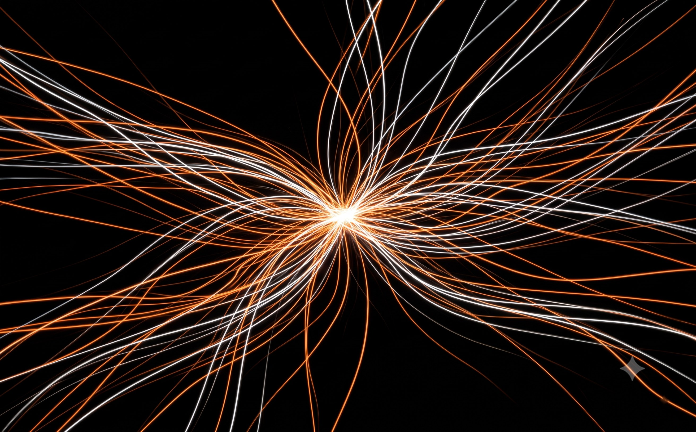
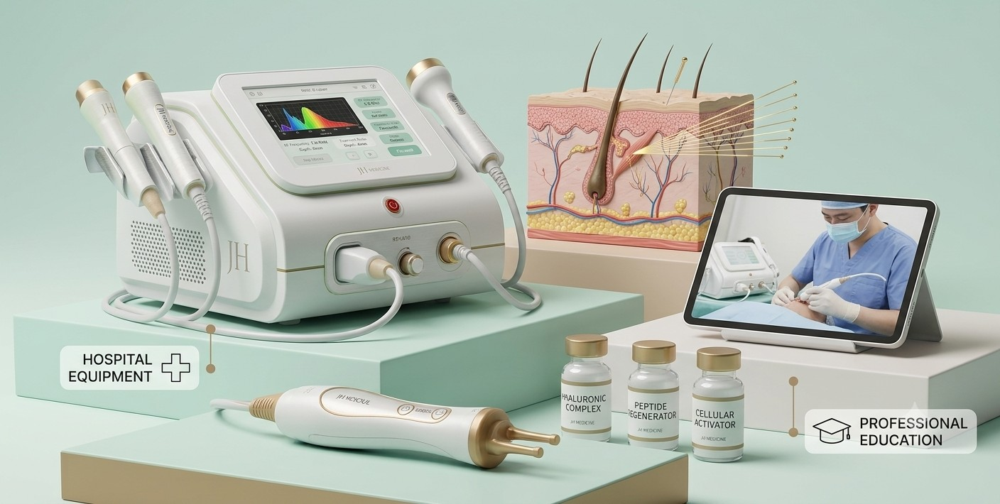

대형병원 및 에스테틱
의료기관과 에스테틱 현장을 연결해 전문성과 신뢰를 기반으로 한 메디컬 뷰티 사업을 확장합니다.
회사소개
JH SEOUL은 제품과 브랜드, 교육과 유통, 공간과 경험을 연결해
한국의 가치를 새로운 시장의 일상으로 확장합니다.
우리는 누구인가
JH SEOUL은 단순히 한국 제품을 해외에 소개하는 데 머물지 않습니다. 시장의 환경과 소비자의 생활방식을 이해하고, 그곳에 필요한 제품과 브랜드, 교육과 공간을 함께 설계합니다.
좋은 원료와 제품을 직접 찾고, 현지 네트워크와 연결하며, 하나의 제품이 실제 시장과 소비자의 일상에 자리 잡을 때까지 필요한 과정을 만들어갑니다.

하나로 연결된 사업
제품 개발은 의료·에스테틱 현장과 연결되고, 교육은 새로운 전문가와 소비자를 만듭니다. 서울창고를 통해 선별된 제품과 브랜드가 공급되고, 서울마을에서는 한국의 뷰티와 음식, 카페와 라이프스타일을 하나의 경험으로 전달합니다.
JH SEOUL의 각 사업은 따로 움직이지 않습니다. 제품, 교육, 의료, 유통과 공간이 서로 연결돼 지속 가능한 시장 기반을 만듭니다.
사업 기반
의료기관과 에스테틱 현장을 연결해 전문성과 신뢰를 기반으로 한 메디컬 뷰티 사업을 확장합니다.
23개 이상의 학교로부터 참여 문의를 받았으며, 그중 23개 학교와 정식 양해각서(MOU)를 체결했습니다. 한국 측 학사·교육 파트너인 열린사이버대학교와도 양해각서(MOU)를 체결해 K-뷰티 커리큘럼의 전문성을 뒷받침합니다.
레이저 제모, 리프팅·타이트닝, 피부 재생, 스킨부스터, 헤드스파 등 메디컬 에스테틱 디바이스를 OEM·ODM 방식으로 글로벌 시장에 공급합니다.
K-뷰티, K-푸드, K-카페, K-라이프스타일을 한 공간에서 경험하는 글로벌 라이프스타일 플랫폼입니다.
선별된 한국의 가치가 새로운 시장과 만나는 제품·브랜드·유통의 연결 기반입니다.


OEM · ODM · 메디컬 에스테틱 디바이스
국내 스킨클리닉이 신뢰하는 최신 장비를 가장 빠르게 큐레이션해 공급합니다. 검증된 정밀 기술과 현지 맞춤형 프로토콜, 대학 MOU 기반 교육 시스템을 연계해 파트너사의 성장을 완성합니다.
일하는 방식
현지 시장과 사용 환경을 먼저 이해합니다.
필요한 제품과 기술을 직접 찾고 비교합니다.
원료와 품질을 단순한 비용으로 판단하지 않습니다.
단기 거래보다 지속 가능한 파트너십을 지향합니다.
제품에서 교육, 유통과 공간까지 하나의 흐름으로 연결합니다.
비전
우리가 전달하려는 것은 제품만이 아닙니다. 서울의 감각과 한국의 기준, 좋은 제품을 만드는 태도와 새로운 생활방식까지 현지의 일상에 자연스럽게 연결하는 것이 JH SEOUL의 목표입니다.
한국에서 시작한 가치가 인도를 비롯한 새로운 시장에서 신뢰받는 선택으로 자리 잡을 때까지, 우리는 필요한 기반을 하나씩 만들어가겠습니다.